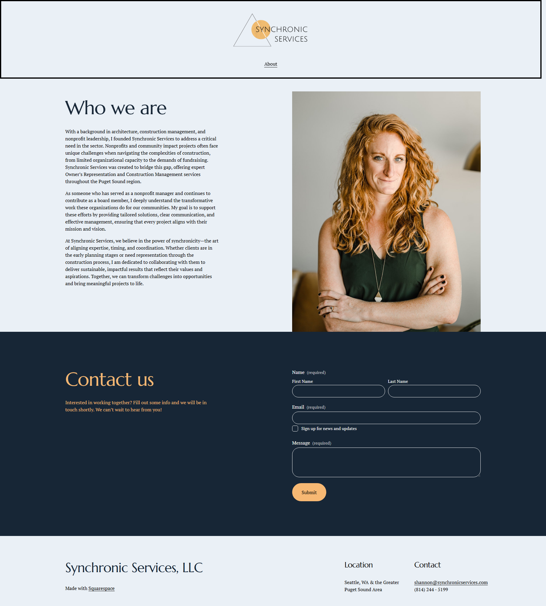
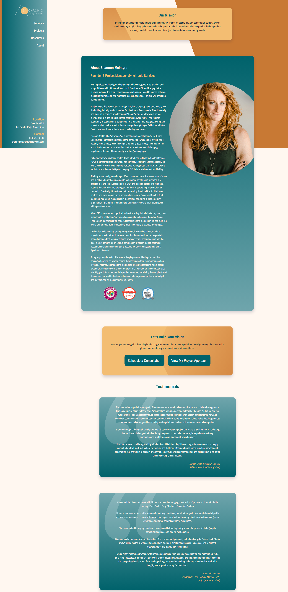

The Challenge
Synchronic Services needed a modern website that clearly communicated their services and created a stronger first impression for potential customers.
The existing website faced several challenges that limited its effectiveness as a marketing and lead-generation tool. Visually, the original design was based on a Squarespace template and felt dated and did not reflect the professionalism or quality of the business. The messaging was also unclear, making it difficult for visitors to quickly understand the company's services and value proposition. Combined with a weak mobile experience, the site struggled to engage users across devices, creating friction for a large portion of its audience.
From a user experience perspective, the website suffered from difficult navigation and poor content hierarchy. Important information was buried within the layout, forcing visitors to work harder than necessary to find what they needed. The site also lacked strong trust indicators, such as testimonials, credentials, or other elements that could help build credibility with potential customers. Additionally, a limited library of available imagery made it challenging to create a visually engaging experience while effectively showcasing the company's work and expertise.
Discovery & Research
Before beginning the design phase, I conducted a discovery process to better understand the client's business, goals, target audience, and competitive landscape. This phase included a detailed project questionnaire designed to uncover key information about the company's services, customer pain points, business objectives, and desired outcomes for the website.
To establish a clear visual direction, I also used a Brand Adjective Tuner exercise. This process ranks the personality traits the client wanted their brand to communicate, such as traditional vs contemporary, controled vs open, slick vs authentic, etc. By narrowing and prioritizing these attributes, I was able to create a more focused design strategy and ensure that visual decisions aligned with the brand's identity.
The discovery findings revealed several opportunities for improvement, including clarifying the company's messaging, improving content organization, strengthening trust signals, and creating a more modern user experience across desktop and mobile devices. These insights served as the foundation for the site's information architecture, content strategy, visual design, and overall user experience decisions throughout the project.
Questions Explored
- Who is the target audience?
- What actions should visitors take?
- What business goals matter most?
- What websites inspire the client?
- What pain points exist today?


Research Findings
Clarity
Users needed to understand available services immediately.
Trust
The website needed stronger visual credibility including testimonials.
Mobile
Responsive design became a top priority.
Navigation
Client wanted more pages featuring services, past projects, and resources like webinars and blog posts.
Content Hierarchy
Users needed important information before secondary details.
Conversion
Users needed clear next steps when ready to contact the business.
Brand Perception
Users formed impressions of quality and professionalism based on the visual design.
Visual Storytelling
Users benefited from visual examples that reinforced service offerings.
Wireframes
I created low-fidelity wireframes in Figma to establish the website's structure and validate key user experience decisions before moving into visual design. This allowed me to focus on layout, content organization, and user flow without the distraction of colors, typography, or imagery. By mapping out the site's information architecture early, I was able to determine the most effective placement of navigation, service information, trust indicators, and calls-to-action.
The wireframing process also helped address several challenges identified during discovery, including unclear messaging, difficult navigation, and poor content hierarchy. I explored multiple layout options and prioritized content based on user needs, ensuring visitors could quickly understand the company's services and find relevant information. Once the structure and user flow were validated, the wireframes served as the blueprint for the high-fidelity design phase.

Design Exploration
After the wireframes were approved, I explored multiple visual design directions to identify the strongest approach for the brand. Each concept varied in layout, typography, color palette, imagery treatment, and overall visual tone, allowing the client to evaluate different ways the brand could be represented online while still meeting the project's goals.
The design exploration process helped align stakeholder expectations and provided valuable feedback before development began. Together, we reviewed the strengths of each direction and selected a final concept that best communicated the company's professionalism, improved visual credibility, and supported a clear user experience. The chosen design became the foundation for the high-fidelity mockups and final website build.

Concept A

Concept B

Final Direction
Development
Once the final design was approved, I translated the mockups into a fully responsive website using HTML, CSS, JavaScript, and GSAP. The development phase focused on creating a fast, accessible, and consistent experience across desktop, tablet, and mobile devices while maintaining the visual integrity of the approved designs. Careful attention was given to responsive layouts, ensuring content adapted seamlessly to different screen sizes and viewing environments.
Performance and user experience were key priorities throughout development. Images were optimized to reduce load times without sacrificing quality, and the site was tested across major browsers to ensure a consistent experience for all users. To enhance engagement and reinforce the site's content hierarchy, I incorporated animated text transitions and subtle motion effects using GSAP. These interactions helped guide user attention, create a more polished experience, and support the overall storytelling of the website without overwhelming the content.
Features
- Responsive Layout
- Image Optimization
- Cross Browser Support
- Animated Text Transitions

Animations
I used GSAP primarily to improve visual hierarchy and guide the user’s attention through the page in a deliberate way. The site has a lot of visual content — project cards, headlines, filters, and imagery — so without motion, everything competed for attention at once.
For the hero section, I used GSAP timeline animations to introduce the headline and supporting text sequentially. The goal was to guide users toward the core value proposition first — who I am, what I do, and the primary call to action — before they started exploring the rest of the page.
I also used ScrollTrigger for section-based animations. As users scroll, project cards and content blocks fade and slide into view with slight staggered delays. That wasn’t just for aesthetics; it helped solve a content hierarchy problem by breaking the page into digestible sections and reducing cognitive overload. Instead of presenting 10 pieces of information simultaneously, content is revealed progressively as the user reaches it.
GSAP was a good fit because it gave me precise control over timing, sequencing, easing, and scroll-based triggers, while still performing smoothly across devices.”
Before & After
Before

After

Before

After

Leadership Principles
Customer Obsession
Client interviews and user-focused decisions.
Ownership
Managed design, development, testing and deployment.
Invent & Simplify
Reduced navigation complexity and improved usability.
Deliver Results
Delivered a responsive website aligned with business goals.